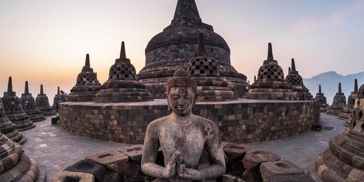
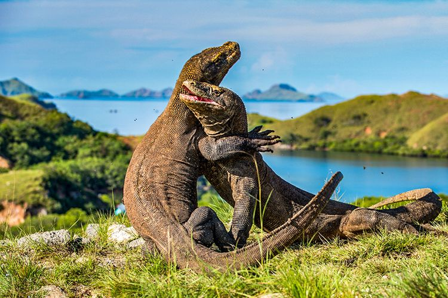
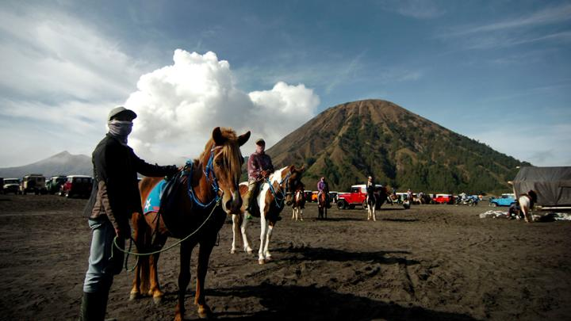

Welcome to Merah Putih Trip
Take You to The Most Beautiful Places in Indonesia
Learn More
Beatiful Indonesia
Kekayaan alam dan budaya merupakan komponen penting dalam pariwisata di Indonesia. Alam Indonesia memiliki kombinasi
iklim tropis, 17.508 pulau yang 6.000 di antaranya tidak dihuni, serta garis pantai terpanjang ketiga di dunia setelah Kanada dan
Uni Eropa. Indonesia juga merupakan negara kepulauan terbesar dan berpenduduk terbanyak di dunia. Pantai-pantai di
Bali, tempat menyelam di Bunaken, Gunung Rinjani di Lombok, dan berbagai taman nasional di Sumatera merupakan contoh
tujuan wisata alam di Indonesia. Tempat-tempat wisata itu didukung dengan warisan budaya yang kaya yang mencerminkan
sejarah dan keberagaman etnis Indonesia yang dinamis dengan 719 bahasa daerah yang dituturkan di seluruh kepulauan
tersebut. Candi Prambanan dan Borobudur, Toraja, Yogyakarta, Minangkabau, dan Bali merupakan contoh tujuan wisata
budaya di Indonesia. Hingga 2010, terdapat 7 lokasi di Indonesia yang telah ditetapkan oleh UNESCO yang masuk dalam
daftar Situs Warisan Dunia. Sementara itu, empat wakil lain juga ditetapkan UNESCO dalam Daftar Representatif Budaya
Takbenda Warisan Manusia yaitu wayang, keris, batik dan angklung.
Objek Wisata
Wisata Alam
Terdapat 50 taman nasional di Indonesia, 6 di antaranya termasuk dalam Situs Warisan Dunia
UNESCO. Taman Nasional Lorentz di Papua memiliki sekitar 42 spesies mamalia yang sebagian
besar hewan langka. Mamalia yang ada di kawasan ini antara lain: kangguru pohon, landak irian,
tikus air, walabi, dan kuskus. Taman nasional ini memiliki lebih dari 1.000 spesies ikan, di
antaranya adalah ikan koloso. Di taman ini terdapat salju abadi yang berada di puncak Gunung
Jayawijaya. Taman Nasional Ujung Kulon merupakan taman nasional tertua di Indonesia yang
dikenal karena hewan Badak jawa bercula satu yang populasinya semakin menipis. Pengamatan
satwa endemik komodo serta satwa lainnya seperti rusa, babi hutan dan burung dapat dilakukan di
Taman Nasional Komodo. Taman Nasional Kelimutu yang berada di Flores memiliki danau kawah
dengan tiga warna yang berbeda.Indonesia memiliki lebih dari 400 gunung berapi dan 130 di antaranya termasuk gunung berapi
aktif. Gunung Bromo di Provinsi Jawa Timur dikenal sebagai lokasi wisata pegunungan untuk
melihat matahari terbit maupun penunggangan kuda. Pada bulan-bulan tertentu, terdapat
upacara kebudayaan Yadnya Kasada yang dilakukan oleh masyarakat Gunung Bromo. Lokasi wisata
lain yang terkenal di daerah Jawa Barat adalah Gunung Tangkuban Parahu yang terletak di Subang.
Gunung aktif ini menghasilkan mata air panas yang terletak di kaki gunung yang dikenal dengan
nama Ciater dan sering dimanfaatkan untuk spa serta terapi pengobatan.
Wisata Budaya
Indonesia terdiri dari 1.128 suku bangsa. Keberagaman suku bangsa tersebut mengakibatkan
keberagaman hasil budaya seperti jenis tarian, alat musik, dan adat istiadat di Indonesia.
Beberapa pagelaran tari yang terkenal di dunia internasional misalnya Sendratari Ramayana yang
menceritakan tentang perjalanan Rama dan dipentaskan di kompleks Candi Prambanan. Desa
Wisata Batubulan yang terletak di Sukawati, Gianyar merupakan desa yang sering dikunjungi untuk
pentas Tari Barongan, Tari Kecak dan Tari Legong.Sejarah kebudayaan Indonesia dari zaman prasejarah hingga periode kemerdekaan dapat ditemukan
di seluruh museum yang ada di Indonesia. Total jumlah museum di Indonesia berjumlah 80
museum yang tersebar dari Aceh hingga Maluku. Sejumlah museum terletak dalam satu
kawasan seperti Kota Tua Jakarta yang memiliki enam museum merupakan daerah yang dikenal
sebagai pusat perdagangan pada Zaman Batavia dan Taman Mini Indonesia Indah yang menjadi
pusat rekreasi dengan jumlah taman dan museum terbanyak dalam satu kawasan di Indonesia.
Wisata Keagamaan
Sejarah mencatat bahwa agama Hindu dan Buddha pernah masuk dan memengaruhi kehidupan spiritual di
Indonesia dengan adanya peninggalan sejarah seperti candi dan prasasti di beberapa lokasi.
Jejak-jejak peninggalan agama Buddha yang terbesar adalah Candi Borobudur yang terletak di
Magelang dan merupakan candi Buddha terbesar di dunia dan masuk dalam daftar Warisan Budaya
Dunia UNESCO pada tahun 1991. Pada abad ke-13 hingga ke-16 Islam masuk ke nusantara
menggantikan era kerajaan Hindu-Buddha. Pada masa ini, banyak ditemukan masjid yang merupakan
akulturasi kebudayaan antara Hindu-Buddha-Jawa dengan agama Islam seperti terlihat pada Masjid
Agung Demak dan Masjid Menara Kudus.
Rekomendasi
Berikut ini beberapa Rekomendasi Tempat Wisata Yang banyak dikunjungi wisatawan luar maupun wisatawan dalam negeri

Candi Borobudur, Magelang, Jawa Tengah.

Pulau Komodo, Nusa Tenggara Timur
 Tanah Lot, Bali
Tanah Lot, Bali
 Raja Ampat, Papua Barat
Raja Ampat, Papua Barat
 Taman Laut Bunaken, Sulawesi Utara
Taman Laut Bunaken, Sulawesi Utara

Gunung Bromo, Jawa Timur